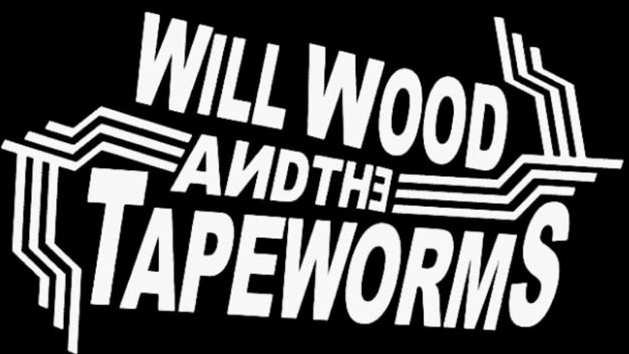
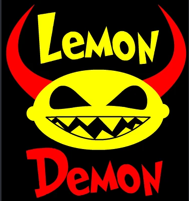
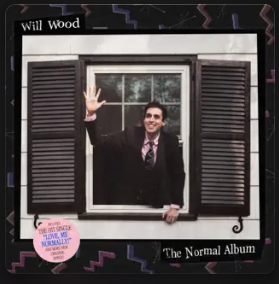
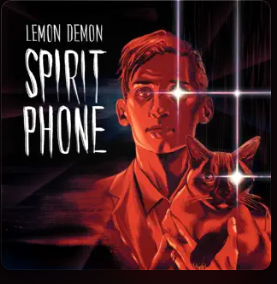
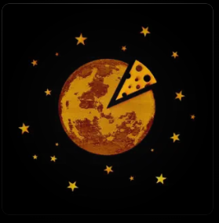

Artistas Favoritos

Will Wood is an American singer-songwriter, writer, filmmaker and comedian. He has released four studio albums. He has also released three films, the live-concert mockumentary The Real Will Wood (2020), the documentary What Did I Do? (The Making of the Normal Album) (2021), and the comedy special Slouching Towards Branson (2025)
Button
Lemon Demon es un proyecto musical creado por el comediante y músico estadounidense Neil Cicierega en 2003 en Boston, Massachusetts . El trabajo de estudio de Lemon Demon es interpretado exclusivamente por Cicierega, quien es el único miembro oficial del proyecto
ButtonÁlbums favoritos

The Normal Album is the third studio album by American musician Will Wood, released on July 10, 2020, by Say-10 Records. It was produced by Jonathon Maisto, who also produced his first album, Everything is a Lot. The album was financed in part by a crowdfunding campaign, which met its goal in its first day.
Escúchalo aquí
Spirit Phone is the seventh studio album by Lemon Demon, a musical project created by American musician Neil Cicierega. The album was released digitally through Bandcamp on February 29, 2016, marking his first full-length album in eight years. All tracks were written, performed, and recorded by Neil Cicierega.
Escucha aqui
"In case I make it," is the fourth studio album by American musician Will Wood, released through Say-10 on July 29, 2022.[1] It is considered by some to be a significant stylistic departure from his previous releases, with a focus on orchestral arrangements and acoustic instrumentation
Escucha aqui